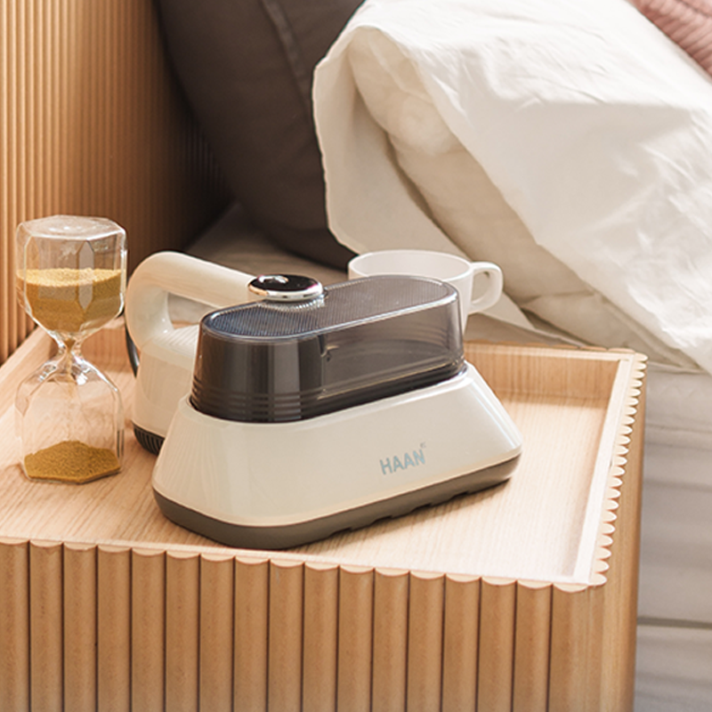
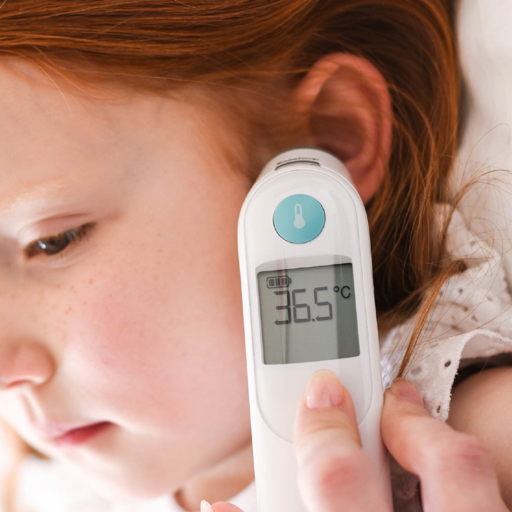

Why Dedicated Bedding Vacuums Became a Staple in Korea
In Korea, seasonal yellow dust (Hwangsa) and high apartment density mean airing out heavy duvets on an outdoor balcony isn’t always practical. Standard floor vacuum cleaners are either too dirty to put on your bedsheets or create suction seals that trap fabric instead of lifting deep-seated dust mites and dead skin cells.
That’s why dedicated UV-C bedding vacuums—pioneered in Korea by brands like Haan and Raycop—are a fixture in Korean bedrooms. We put our Haan UV Bedding Vacuum through a 7-day mattress and duvet test to show you exactly what it pulls out of seemingly "clean" sheets.


Part 1: Inside the UV-C Bedding Vacuum Test (And the Shocking HEPA Bin Result)
A dedicated mattress vacuum works via three simultaneous mechanisms that a regular stick vacuum lacks:
- High-Frequency Pulsation Pad (3,600+ beats/min): Rapidly taps the mattress surface to shake loose dust mites, pollen, and microscopic skin dander clinging to cotton fibers.
- UV-C Germicidal Lamp: Emits 253.7nm ultraviolet light only when the safety sensors detect flat contact with bedding—neutralizing 99.9% of surface bacteria and dust mite allergens.
- Sealed Micro-HEPA Filtration: Traps fine chalk-like dust inside a washable dust cup so allergens aren’t blown back into your bedroom air.


Part 2: Braun ThermoScan Ear Thermometer Review — Why Korean Pediatricians & Parents Trust It Most
Ask any parent in Korea for their #1 baby-shower or new-home medical checklist item, and the answer is universally the Braun ThermoScan (specifically the IRT6520 / ThermoScan 5 & 7 series). Even if you visit a local pediatric clinic in Seoul or Pyeongtaek, the nurse’s station uses the exact same Braun infrared ear technology.
- Pre-Warmed Sensor Tip: Conventional ear thermometers insert a cold plastic probe into the ear canal, which cools the surrounding tissue and causes inconsistent readings. Braun pre-warms its tip to 34°C (93.2°F) for clinical repeatability.
- ExacTemp Stability Indicator: A light and gentle beep confirm the probe is positioned accurately aiming at the eardrum—which shares blood supply with the brain’s temperature control center.
- One-Button Lens Filter Ejector: Pop on a fresh BPA-free disposable Hygiene Cap before each family member’s reading and eject it directly into the trash without touching it.
Comparison Table: Top Home Hygiene & Health Picks on Amazon
| Product | Primary Use | Standout Technology | Maintenance | Amazon Link |
|---|---|---|---|---|
| UV-C HEPA Bedding & Mattress Vacuum | Mattresses, Pillows, Sofas, Crib Bedding | High-Frequency Pulsation Pad + 253.7nm UV-C Lamp + Dual Cyclone HEPA | Washable Dust Cup & Replaceable HEPA Filter | 🛒 Buy on Amazon |
| Braun ThermoScan Ear Thermometer | Infants, Kids & Adult Fever Monitoring | Pre-Warmed Infrared Tip + ExacTemp Guidance + Color-Coded Fever Display | Uses Braun LF40 Disposable Lens Filters | 🛒 Buy on Amazon |
| Braun Hygiene Caps (LF40 40-Count Refill) | Sanitary Probe Covers | 0% BPA/Latex Ultra-Thin Optical Membrane | Replace After Each Reading | 🛒 Refill on Amazon |
Pros & Cons Summary
✅ Pros
- UV Bedding Vacuum: Visibly extracts fine white skin dander and dust mite debris within 3 minutes; noticeably reduces morning nasal congestion for allergy sufferers.
- Braun ThermoScan: Dramatically more consistent than forehead non-contact thermometers (which often vary by 0.8°C depending on room draft or sweat).
⚠️ Cons
- UV Bedding Vacuum: Corded models deliver stronger sustained suction than cordless ones, so you’ll want an outlet near your bed.
- Braun ThermoScan: Requires genuine LF40 disposable lens caps for calibrated accuracy—buy a spare box of 40 filters when ordering.